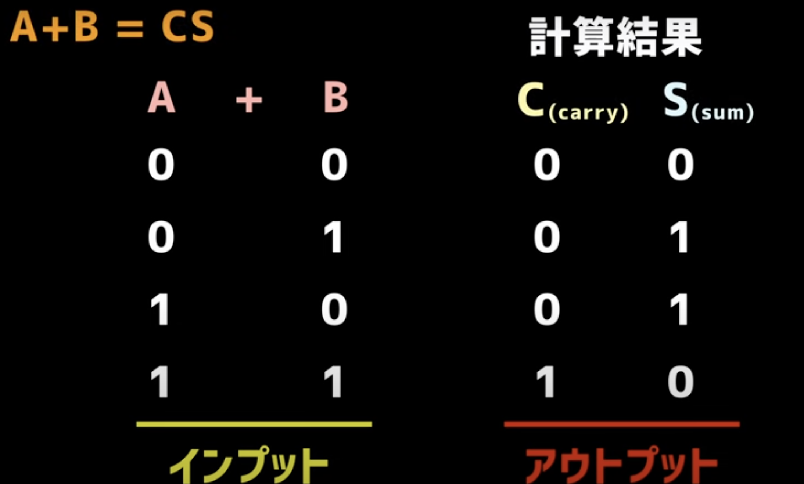
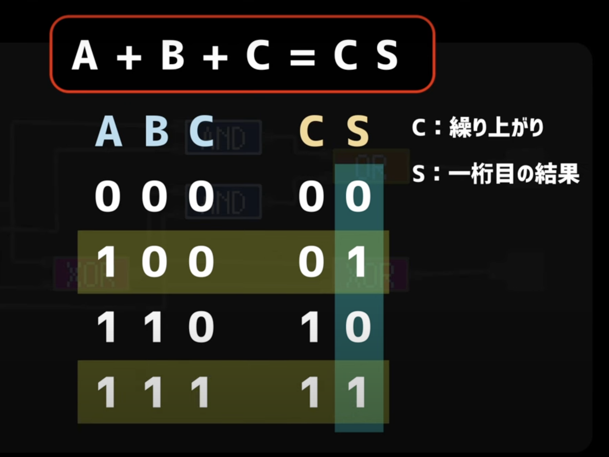

初級編
まずは、楽しく体験！
スイッチとランプを使ったインタラクティブな実験室で、論理回路の基本的な動きを直感的に理解しよう。「ANDって何？」「XORって面白い！」と感じるのがゴールです。
あなたのレベルに合わせて、2つのコースから選んで学習を進めよう。
スイッチとランプを使ったインタラクティブな実験室で、論理回路の基本的な動きを直感的に理解しよう。「ANDって何？」「XORって面白い！」と感じるのがゴールです。
2つの1桁の2進数を計算し、「和」と「桁上がり」を出力します。主に、一番下の桁の計算で使われます。
下の桁からの桁上がりを含めた、3つの1桁の2進数を計算します。2桁目以降の計算で必須となります。
ポイント：全加算器は、下の桁から「1」が上がってきた（桁上がりがオンになった）場合、それを考慮して計算結果を出力します。これにより、複数桁の正確な足し算が可能になります。
さらに理解を深めるために、基本情報技術者試験の過去問にも挑戦してみましょう。（問題は順次追加予定）
参考動画で学ぶ